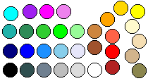

The Standard Color Table
Anthony's X Icon Library (version 1.9)
Dark <--- color shades ---> Light
.-----------------------------------------------------------------------.
| "black", "dark slate grey", "slate grey", | |
| "grey", "gainsboro", "white" | 6 |
| "firebrick", "red", "tomato", "orange", "gold", "yellow" | 6 |
| "sienna", "peru", ---^ | 2 |
| ^-- "khaki4", "tan", "wheat", "lemon chiffon" | 4 |
| "sea green", "lime green", "green", "pale green" | 4 |
| ^--- "light sea green", "cyan" | 2 |
| "navy", "blue", "dodger blue", "sky blue", "lavender" | 5 |
| "purple", "magenta", "violet" | 3 |
`-----------------------------------------------------------------------'
Total: 32

Also See:
"desc/cl-misc/colortable.xpm" for a visual guide. (displayed above)
"desc/cl-misc/colormap.ppm" for use as a PbmPlus "ppmquant" colormap.
Anthony Thyssen - (SysProg @ Griffith University) anthony@cit.gu.edu.au
------------------------------------------------------------------------------
"Simplicity has a habit of expanding into catastrophe"
--- "The Ship who Sang" -- Anne McCaffrey
------------------------------------------------------------------------------